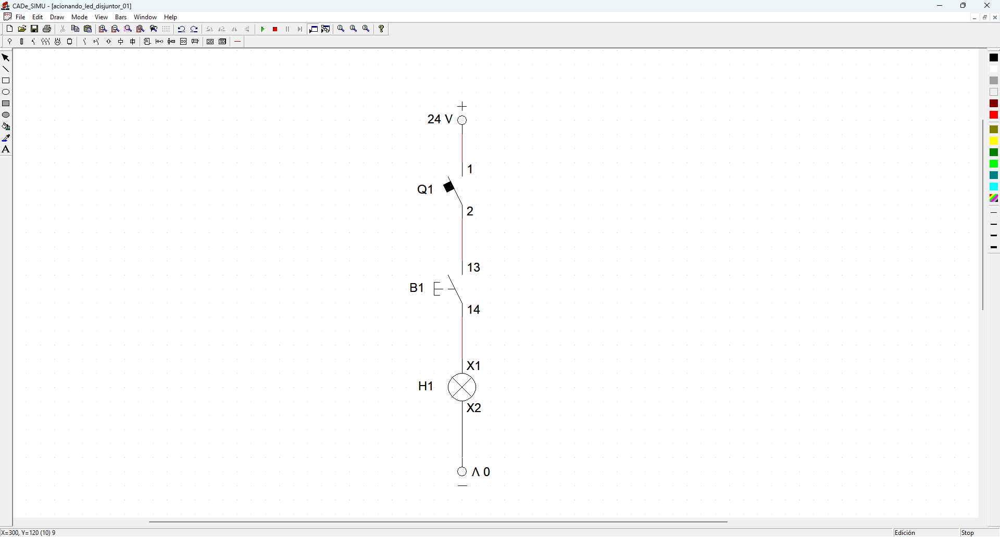
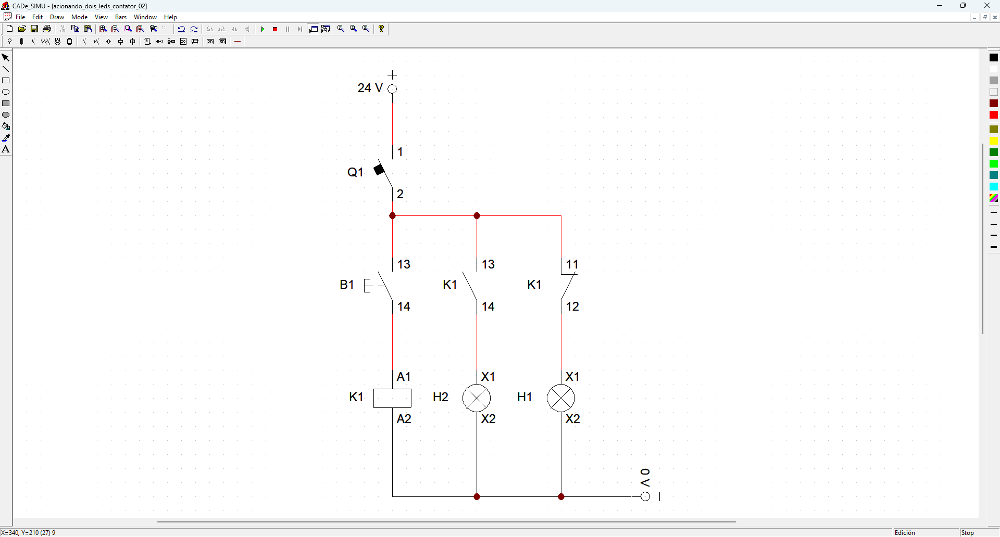
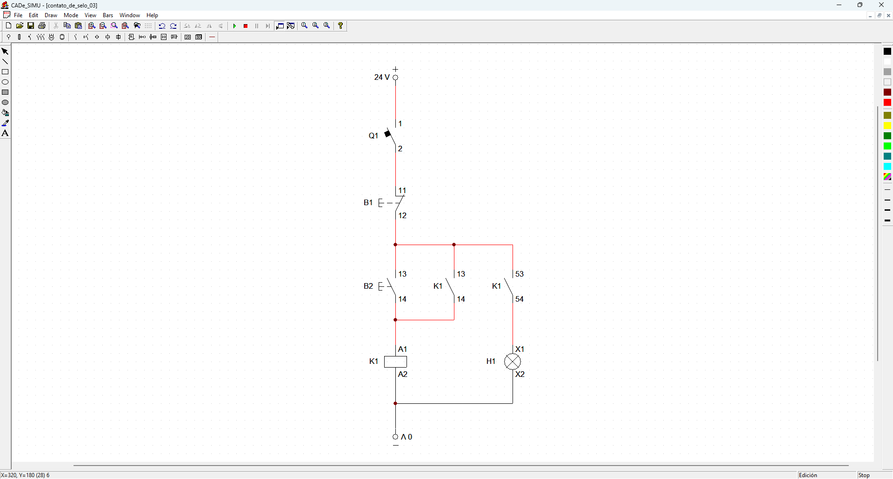
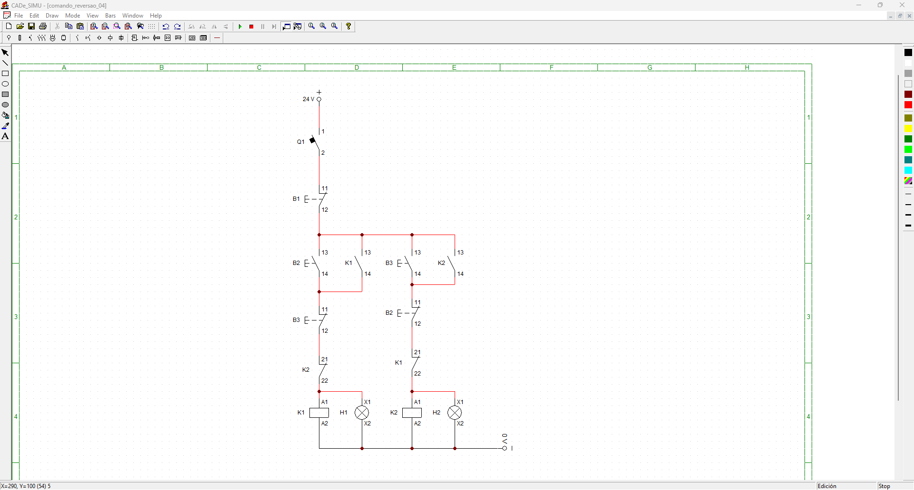
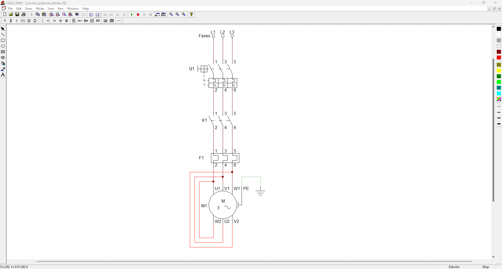
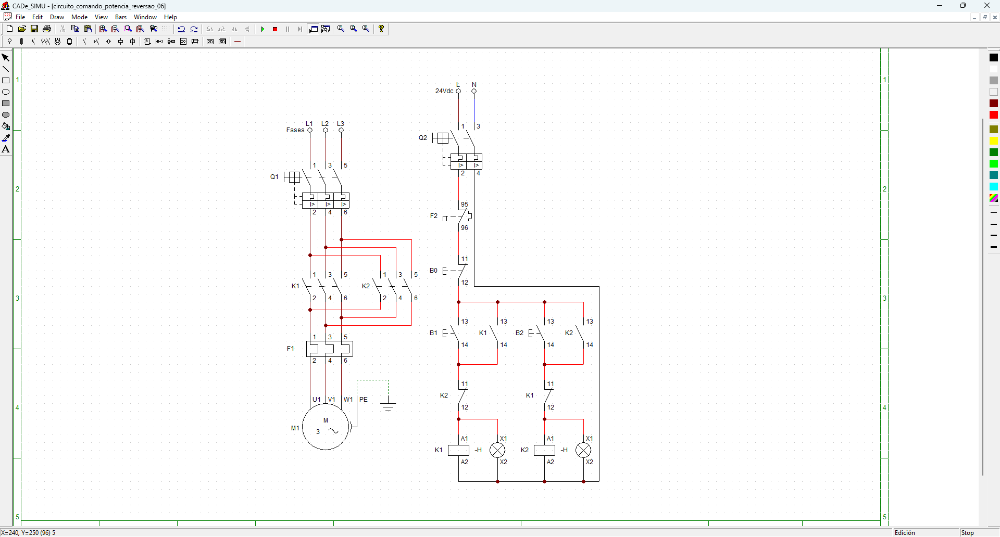
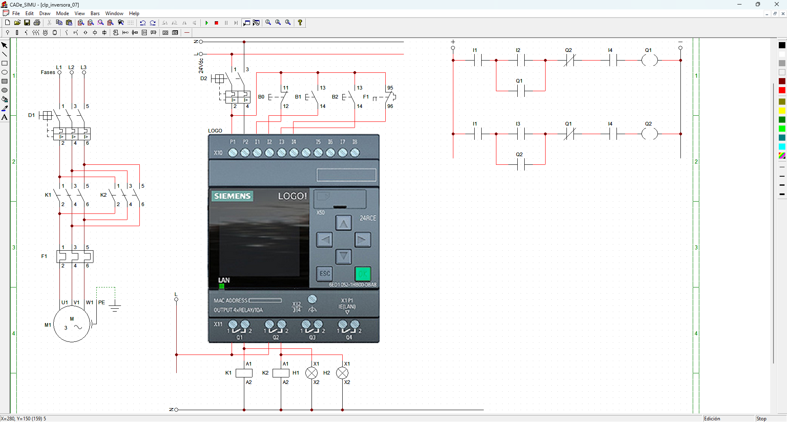

Circuitos ELÉTRICOS
CIRCUITO 1 Led
Circuito elétrico para ligar led com disjuntor e push button.

CIRCUITO 2 Contator
Circuito elétrico para ligar led com contatores NA e NF.

CIRCUITO 3 Selo
Circuito elétrico com contato selo, botão NF para desligar o led e o selo com contator para manter energizado.

CIRCUITO 4 Reversão
Circuito elétrico de comando de reversão. Quando clica em um botão liga o led 1 e quando clica no botão 2 liga o led 2 e desliga o led 1.

CIRCUITO 5 Potência
Circuito de potência para ligar um motor elétrico trifásico, com disjuntor, contator e relé térmico.

CIRCUITO 6 Comando e Potência
Circuito de comando e potência com reversão, trocando uma das fases de saída conseguimos reverter o giro do motor para anti-horário.

CIRCUITO 7 Comando no PLC e Potência
Circuito de comando no PLC e potência com reversão, trocando uma das fases de saída conseguimos reverter o giro do motor para anti-horário e o PLC faz a parte de comando.
